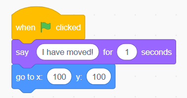
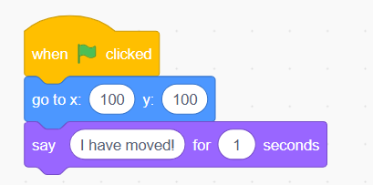
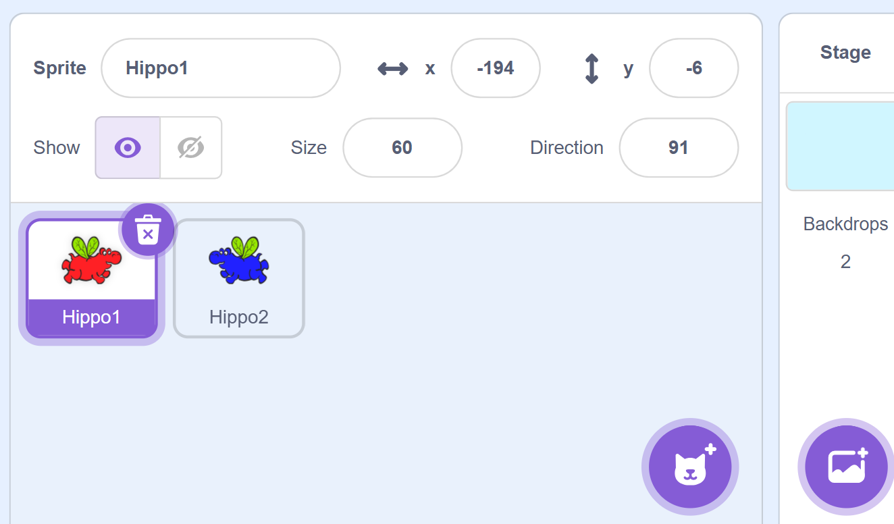
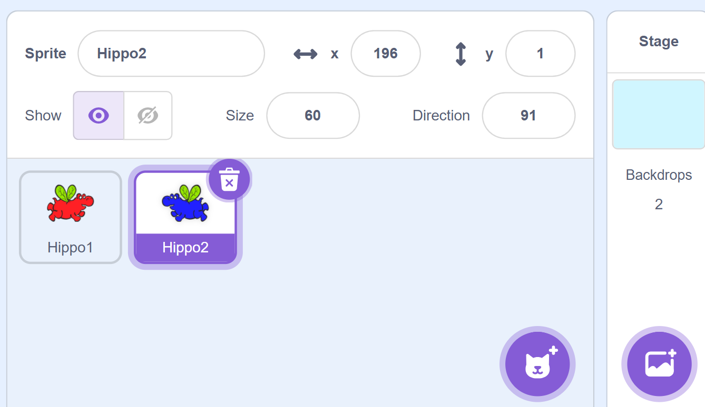
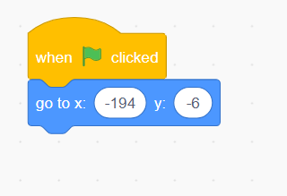
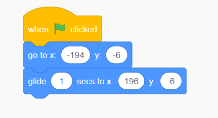
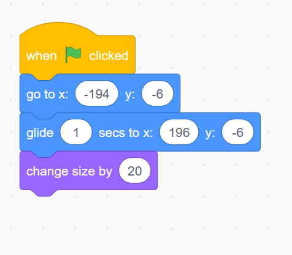
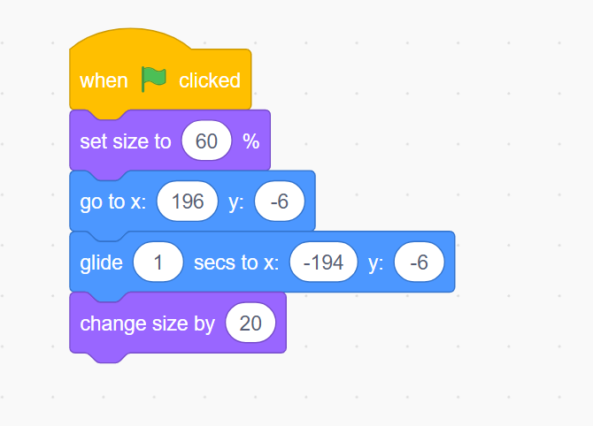

SEQUENTIAL LOGIC
Think of making a sandwich. What steps would you take?
- Get up from your bed.
- Brush your teeth.
- Take a bath.
- Wear your uniform.
- Put your socks.
- Put your shoes
- Go to school

Imagine you put on your shoes before wearing socks!
In our daily lives, sometimes the order in which we do things is important
Just like that in programming, sequential logic is about giving instructions in the right order.
Let’s see in Scratch how the sequence of commands impacts the output!
ORDER OF COMMANDS
I will move the sprite to a new location and show a message.
We will use a new block to display the message. This block displays a message on the screen for a certain duration.
You can specify the duration in the number of seconds in the command.
A speech bubble appears over the sprite and stays for a specified time.

What is happening here?
The message is displayed first and then the sprite is moved. Let’s correct the order!

Do you see why the order is important?
Now, let’s do something fun!
WORKING WITH MULTIPLE SPRITES
GOAL: Let's make these two sprites fly across the stage! As they move, they'll say something cool and grow in size. The left hippo will glide to the right side, and the right hippo to the left.
THINKING ABOUT THE ACTIONS TO BE PERFORMED:
But before we do that, let’s think of the steps we must follow to make this work.
Until now we have worked with only one sprite but do you know we can use multiple sprite?
Each sprite is like an actor in a play. Even though they share the stage, they can have different lines and actions!
Just like in a play each actor has their costumes and dialogues.
We can decide how we want each sprite to behave. You can think of yourself as a director of a play!
Click on Hippo1 to add actions for Hippo1.

Click on Hippo2 to add actions for Hippo2.

We want as soon as we click on the green flag the sprite should follow these actions in the following order:
- We want our sprite to start from one point
- Glide across the stage to a new position
- Say something cool.
- Let’s make it even more interesting by increasing the size as it reaches another end.
Now that we know what steps to follow, let’s think of the blocks we need.
Let’s start with Hippo1.
Step 1: First, let's pick when the green flag is clicked so that the commands get executed when you click on the green flag.
Step 2: I want every time I click on the green flag it should first come to its original position before gliding to the other end. Which command will help me do that?
That’s correct we need to use go to command for that.

Step 3: Next, we want the sprite to smoothly move to a specific point. Which command would help us to do that?
For that, we will use the glide command from Motion.

Glides the sprite to the location in a specified amount of time. If the number of seconds is less it will reach faster and if it is more it will reach slowly.
Step 4: Now we want it should show a message for a certain number of seconds, which command do you think will help us do that?
We will use say in secs block for that.

Step 5: Finally, we want to increase the size to make it grow after the glide, which command will do that for us? We will use the change size by command from Looks.
Changes the sprite's size by the specified amount. If you want to increase the size you can mention a positive number and to reduce the size you can mention a negative number.

Let’s see the output!
Step 6: Here you can see how the sprite is not in its original size when we execute the code again and every time we execute the code it keeps getting bigger.
Which command would help you to reset the size of the sprite?
We can use the set size to command from Looks.
Sets the sprite's size to the specified amount. To make a sprite of its original size you can specify 100.
Step 7: Let’s do the same for another hippo.

Now that you have learned about new commands, it is time for you to do some fun activities.